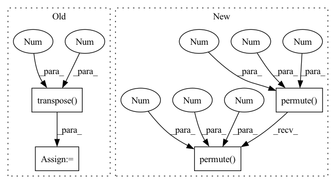

Pattern ID :2861
Before Change
attn_scores = F.softmax(scores, dim=-1)
out = torch.matmul(attn_scores, v)
out = out.transpose(1 , 2 ) .contiguous().view(b, -1, self.heads * self.head_dim)
out = self.out(out)
return out
After Change
k = self.key(x, dims=([2], [0]))
v = self.value(x, dims=([2], [0]))
q = q.permute(0 , 2 , 1, 3 )
k = k.permute(0, 2, 1, 3)
v = v.permute(0, 2, 1, 3)
attn_weights = torch.matmul(q, k.transpose(-2, -1)) / self.scale
attn_weights = F.softmax(attn_weights, dim=-1)
out = torch.matmul(attn_weights, v)
out = out.permute(0 , 2 , 1, 3 )
out = self.out(out, dims=([2, 3], [0, 1]))
return outIn pattern: SUPERPATTERN
Frequency: 4
Non-data size: 4
Instances Fragment ID: 15753313
Project Name: asyml/vision-transformer-pytorch
Commit Name: 49517e96e5eccb618d99e3a8909d689020a1612e
Time: 2020-11-14
Author: haoc3@andrew.cmu.edu
File Name: model.py
M Class Name: SelfAttention
N Class Name: SelfAttention
M Method Name: forward(2)
N Method Name: forward(3)
M Parent Class: nn.Module
N Parent Class: nn.Module
M File Name: model.py
N File Name: model.py
M Start Line: 69
M End Line: 83
N Start Line: 85
N End Line: 96
Before Change
// [B, N, L]
x = self.conv1d(x)
if self.use_global_pos_enc:
x = self.pos_enc(x.transpose(1 , -1 ) ).transpose(1, -1) + x * (
x.size(1) ** 0.5
)
After Change
// [B, L, N]
x = self.norm(x.permute(0, 2, 1)).permute(0 , 2 , 1 )
// [B, L, N]
x = self.conv1d(x)
// [B, K, S, N] Fragment ID: 15753266
Project Name: speechbrain/speechbrain
Commit Name: a34758d23ee7dcd9a7ec0c87063e9f8f06186985
Time: 2020-12-10
Author: csubakan@gmail.com
File Name: speechbrain/lobes/models/dual_path.py
M Class Name: Dual_Path_Model
N Class Name: Dual_Path_Model
M Method Name: forward(2)
N Method Name: forward(2)
M Parent Class: nn.Module
N Parent Class: nn.Module
M File Name: speechbrain/lobes/models/dual_path.py
N File Name: speechbrain/lobes/models/dual_path.py
M Start Line: 1004
M End Line: 1032
N Start Line: 1026
N End Line: 1054
Before Change
b, _, w, h = x.shape
p = x.flatten(2)
p = p.unsqueeze(0)
p = p.transpose(0 , 3 )
p = p.squeeze(3)
e = self.linear(p)
x = p + e
x = self.tr(x)
x = x.unsqueeze(3)
x = x.transpose(0, 3)
x = x.reshape(b, self.c2, w, h)After Change
if self.conv is not None:
x = self.conv(x)
b, _, w, h = x.shape
p = x.flatten(2).permute(2 , 0 , 1 )
return self.tr(p + self.linear(p)).permute(1 , 2 , 0 ) .reshape(b, self.c2, w, h)
class Bottleneck(nn.Module): Fragment ID: 15753305
Project Name: yl305237731/flexible-yolov5
Commit Name: 9fb058ef7b7925a243a436788f3f55dbb4b3e263
Time: 2022-07-02
Author: yl305237731@gmail.com
File Name: od/models/modules/common.py
M Class Name: TransformerBlock
N Class Name: TransformerBlock
M Method Name: forward(2)
N Method Name: forward(2)
M Parent Class: nn.Module
N Parent Class: nn.Module
M File Name: od/models/modules/common.py
N File Name: od/models/modules/common.py
M Start Line: 114
M End Line: 125
N Start Line: 75
N End Line: 76